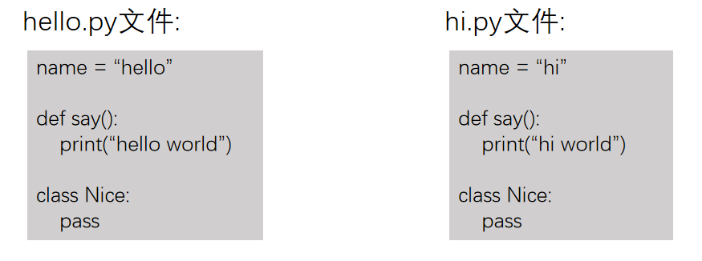
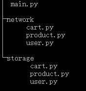

<!DOCTYPE lake>
<h2 data-lake-id="xlhc3" data-lake-index-type="2" id="xlhc3"><span data-lake-id="ue5222b17" id="ue5222b17">模块module</span></h2><p data-lake-id="u62d0d742" id="u62d0d742"><span data-lake-id="uaebc9682" id="uaebc9682">模块是 Python 程序架构的一个核心概念。Python中模块就是一个</span><code data-lake-id="ufa2247d7" id="ufa2247d7"><span data-lake-id="u611d4b72" id="u611d4b72">.py</span></code><span data-lake-id="u9aaedded" id="u9aaedded">文件，模块中可以定义</span><code data-lake-id="ue8e4f4d8" id="ue8e4f4d8"><span data-lake-id="u23e2183f" id="u23e2183f">函数</span></code><span data-lake-id="uf48f57f0" id="uf48f57f0">，</span><code data-lake-id="ufabafd3c" id="ufabafd3c"><span data-lake-id="u25a8f7af" id="u25a8f7af">变量</span></code><span data-lake-id="uda7ca626" id="uda7ca626">，</span><code data-lake-id="ua7a78cc6" id="ua7a78cc6"><span data-lake-id="ue3fa58ce" id="ue3fa58ce">类</span></code><span data-lake-id="ud9195a94" id="ud9195a94">。模块可以被其他模块引用</span></p><h3 data-lake-id="IHga9" data-lake-index-type="2" id="IHga9"><span data-lake-id="u150eae5f" id="u150eae5f">创建模块文件</span></h3><p data-lake-id="u19e1511c" id="u19e1511c"><span data-lake-id="u58d5c97c" id="u58d5c97c">创建文件：</span><code data-lake-id="u813cdf79" id="u813cdf79"><span data-lake-id="u5fa78e09" id="u5fa78e09">utils.py</span></code></p><span class="yuque-card-unsupported">[codeblock]</span><h3 data-lake-id="xnh6g" data-lake-index-type="2" id="xnh6g"><span data-lake-id="uc3e4e749" id="uc3e4e749">导入模块中的功能</span></h3><p data-lake-id="u0b5fbb91" id="u0b5fbb91"><span data-lake-id="u8227db04" id="u8227db04">整体导入模块</span></p><span class="yuque-card-unsupported">[codeblock]</span><p data-lake-id="ue44d963e" id="ue44d963e"><span data-lake-id="u1846f1f1" id="u1846f1f1">导入模块中部分功能</span></p><span class="yuque-card-unsupported">[codeblock]</span><p data-lake-id="u6854b5fa" id="u6854b5fa"><span data-lake-id="ud14617fb" id="ud14617fb">导入模块中全部功能</span></p><span class="yuque-card-unsupported">[codeblock]</span><h2 data-lake-id="DNuO7" data-lake-index-type="2" id="DNuO7"><span data-lake-id="ufc210f26" id="ufc210f26">模块的导入冲突</span></h2><p data-lake-id="ucebf244f" id="ucebf244f"><span data-lake-id="u88439046" id="u88439046">如果两个模块中有同名的变量、函数或者类，同时引入就可能出现冲突</span></p><p data-lake-id="u88204a16" id="u88204a16"></p><h3 data-lake-id="l0wsn" data-lake-index-type="2" id="l0wsn"><span data-lake-id="u2428b1b5" id="u2428b1b5">部分导入冲突</span></h3><span class="yuque-card-unsupported">[codeblock]</span><p data-lake-id="u89865838" id="u89865838"><span data-lake-id="u251e7ffb" id="u251e7ffb">同时引入</span><code data-lake-id="ud664d2a2" id="ud664d2a2"><span data-lake-id="u0b4e2129" id="u0b4e2129">name</span></code><span data-lake-id="u08ca22e3" id="u08ca22e3">的话，输出的</span><code data-lake-id="u27edbe6c" id="u27edbe6c"><span data-lake-id="u1eded626" id="u1eded626">name</span></code><span data-lake-id="u77986930" id="u77986930">是</span><code data-lake-id="ud8cee797" id="ud8cee797"><span data-lake-id="u4d953bc9" id="u4d953bc9">hi</span></code><span data-lake-id="ub7d5e95d" id="ub7d5e95d">中的</span><code data-lake-id="u729c7e44" id="u729c7e44"><span data-lake-id="uc965095c" id="uc965095c">name</span></code><span data-lake-id="ub52917a7" id="ub52917a7">，是有顺序的</span></p><p data-lake-id="u7bae0f92" id="u7bae0f92"><strong><span data-lake-id="uc7c4043d" id="uc7c4043d">​</span></strong><br/></p><p data-lake-id="ud17beb12" id="ud17beb12"><strong><span data-lake-id="uf36805da" id="uf36805da">局部引入冲突解决方案</span></strong></p><p data-lake-id="ud5ae2136" id="ud5ae2136"><span data-lake-id="u758cb9dc" id="u758cb9dc">可以通过</span><code data-lake-id="u294d1188" id="u294d1188"><span data-lake-id="u6ab89e51" id="u6ab89e51">as</span></code><span data-lake-id="ub0e8837e" id="ub0e8837e"> 给功能起别名</span></p><span class="yuque-card-unsupported">[codeblock]</span><h3 data-lake-id="CbEK1" data-lake-index-type="2" id="CbEK1"><span data-lake-id="u1dd11e8c" id="u1dd11e8c">全部导入冲突</span></h3><span class="yuque-card-unsupported">[codeblock]</span><p data-lake-id="u2c233a17" id="u2c233a17"><span data-lake-id="ub9b5c629" id="ub9b5c629">同样输出的是hi中的name属性</span></p><p data-lake-id="u79387291" id="u79387291"><span data-lake-id="ucbb941b2" id="ucbb941b2">​</span><br/></p><p data-lake-id="uf70b01b6" id="uf70b01b6"><strong><span data-lake-id="u73471624" id="u73471624">全部引入冲突解决方案</span></strong></p><p data-lake-id="udb61e3a5" id="udb61e3a5"><span data-lake-id="u5c01b70e" id="u5c01b70e">直接引入模块</span></p><span class="yuque-card-unsupported">[codeblock]</span><h2 data-lake-id="ytFTY" data-lake-index-type="2" id="ytFTY"><span data-lake-id="ua5f77401" id="ua5f77401">模块的内置变量</span><code data-lake-id="u0dc81c39" id="u0dc81c39"><span data-lake-id="u93faee06" id="u93faee06">__name__</span></code></h2><p data-lake-id="u9e7740da" id="u9e7740da"><br/></p><p data-lake-id="u36059e81" id="u36059e81"><code data-lake-id="uc16c41fb" id="uc16c41fb"><span data-lake-id="u8dee574c" id="u8dee574c">__name__</span></code><span data-lake-id="u17cadfc6" id="u17cadfc6">是模块中的</span><strong><span data-lake-id="u068b610a" id="u068b610a">内置变量</span></strong><span data-lake-id="u08b7bed9" id="u08b7bed9">,每个模块都有这个属性</span></p><p data-lake-id="u474f170e" id="u474f170e"><strong><span data-lake-id="u56052b0d" id="u56052b0d">创建hello.py</span></strong></p><span class="yuque-card-unsupported">[codeblock]</span><p data-lake-id="u0ac225e0" id="u0ac225e0"><span data-lake-id="uba599bf1" id="uba599bf1">直接运行</span><code data-lake-id="ua0b26556" id="ua0b26556"><span data-lake-id="u3d64f5a3" id="u3d64f5a3">hello.py</span></code><span data-lake-id="ua750a037" id="ua750a037">,结果为:</span></p><span class="yuque-card-unsupported">[codeblock]</span><p data-lake-id="u63b53b48" id="u63b53b48"><span data-lake-id="u76fb34d6" id="u76fb34d6">其它模块导入hello.py</span></p><span class="yuque-card-unsupported">[codeblock]</span><p data-lake-id="u08ae01bb" id="u08ae01bb"><span data-lake-id="ub96088b4" id="ub96088b4">结果为:</span></p><span class="yuque-card-unsupported">[codeblock]</span><h3 data-lake-id="y8fdv" data-lake-index-type="2" id="y8fdv"><code data-lake-id="uee487132" id="uee487132"><span data-lake-id="u4aa4c11e" id="u4aa4c11e">__name__</span></code><span data-lake-id="ud2cc55ce" id="ud2cc55ce">的特点</span></h3><ul list="ua90a5bc2"><li data-lake-id="u4a24c502" fid="u2c27bfaf" id="u4a24c502"><span data-lake-id="u325d675d" id="u325d675d">如果将当前模块作为启动项，</span><code data-lake-id="u2266641f" id="u2266641f"><span data-lake-id="u9393363c" id="u9393363c">__name__</span></code><span data-lake-id="ud632a023" id="ud632a023">值为</span><code data-lake-id="uf6c36a44" id="uf6c36a44"><span data-lake-id="u5bfa29e1" id="u5bfa29e1">__main__</span></code></li><li data-lake-id="u123c9289" fid="u2c27bfaf" id="u123c9289"><span data-lake-id="u241b1d6d" id="u241b1d6d">如果当前模块当作依赖引入，</span><code data-lake-id="u348a1a3d" id="u348a1a3d"><span data-lake-id="u51e5bb80" id="u51e5bb80">__name__</span></code><span data-lake-id="uc887e846" id="uc887e846">值不为</span><code data-lake-id="ub70f6efe" id="ub70f6efe"><span data-lake-id="u4c4e614c" id="u4c4e614c">__main__</span></code><span data-lake-id="ud3bf229c" id="ud3bf229c">，为依赖的模块名称</span></li></ul><h3 data-lake-id="uAIFo" data-lake-index-type="2" id="uAIFo"><code data-lake-id="u5cddd722" id="u5cddd722"><span data-lake-id="u82bd4c93" id="u82bd4c93">__name__</span></code><span data-lake-id="ua20e9840" id="ua20e9840">作用</span></h3><p data-lake-id="u35e49bd6" id="u35e49bd6"><span data-lake-id="u38a2bdf6" id="u38a2bdf6">python没有入口函数的概念,可以通过</span><code data-lake-id="u3c0c935b" id="u3c0c935b"><span data-lake-id="u9058f3ef" id="u9058f3ef">__name__</span></code><span data-lake-id="u0657e9aa" id="u0657e9aa">的功能</span></p><span class="yuque-card-unsupported">[codeblock]</span><p data-lake-id="ue2c6e5ab" id="ue2c6e5ab"><span data-lake-id="ue023889f" id="ue023889f">主程序的代码放在</span><code data-lake-id="u4261e15a" id="u4261e15a"><span data-lake-id="uee401621" id="uee401621">if __name__ == '__main__':</span></code><span data-lake-id="u013e4e09" id="u013e4e09">里。这样当前模块即可以独立测试运行，也可以被其他文件导入使用。如果不添加此</span><code data-lake-id="u73b71f57" id="u73b71f57"><span data-lake-id="u59e2ce7a" id="u59e2ce7a">if</span></code><span data-lake-id="uf416f8b2" id="uf416f8b2">判断，别的地方导入当前文件模块时，会运行一些不需要的代码。</span></p><h2 data-lake-id="GVcUw" data-lake-index-type="2" id="GVcUw"><span data-lake-id="u941c5fed" id="u941c5fed">包 package</span></h2><p data-lake-id="u75749125" id="u75749125"><span data-lake-id="u981a7668" id="u981a7668">包就是个文件夹，用来放模块的，限定了模块的命名空间</span></p><h3 data-lake-id="UoDTK" data-lake-index-type="2" id="UoDTK"><span data-lake-id="u64c40960" id="u64c40960">包的作用</span></h3><ul list="u171da0d5"><li data-lake-id="uda5a75c0" fid="uf187612e" id="uda5a75c0"><span data-lake-id="u2d83d02a" id="u2d83d02a">用来管理模块的</span></li><li data-lake-id="ud7e0aa64" fid="uf187612e" id="ud7e0aa64"><span data-lake-id="ub31e44d2" id="ub31e44d2">让业务更清晰化</span></li><li data-lake-id="uba98179c" fid="uf187612e" id="uba98179c"><span data-lake-id="u1a99994a" id="u1a99994a">解决一些命名的问题</span></li></ul><p data-lake-id="uf7775f71" id="uf7775f71"></p><span class="yuque-card-unsupported">[codeblock]</span><p data-lake-id="u01742326" id="u01742326"><span data-lake-id="u89455ff9" id="u89455ff9">通过包把类似功能的模块进行分类，让业务更加清晰</span></p><h3 data-lake-id="EjybA" data-lake-index-type="2" id="EjybA"><span data-lake-id="ua9ea7ea4" id="ua9ea7ea4">引入包中模块的功能方法一</span></h3><p data-lake-id="ud45e4a93" id="ud45e4a93"><code data-lake-id="uc184488a" id="uc184488a"><span data-lake-id="uf1c8c7d4" id="uf1c8c7d4">import 包名.模块名</span></code></p><span class="yuque-card-unsupported">[codeblock]</span><h3 data-lake-id="RG3pI" data-lake-index-type="2" id="RG3pI"><span data-lake-id="uc6cbf8b1" id="uc6cbf8b1">引入包中模块的功能方法二（推荐）</span></h3><p data-lake-id="u362b5310" id="u362b5310"><code data-lake-id="uffdca145" id="uffdca145"><span data-lake-id="u3ebbc05f" id="u3ebbc05f">from 包名 import 模块名</span></code></p><span class="yuque-card-unsupported">[codeblock]</span><h3 data-lake-id="LlBmU" data-lake-index-type="2" id="LlBmU"><span data-lake-id="u3a0e379e" id="u3a0e379e">引入包中模块的功能方法三（推荐）</span></h3><p data-lake-id="uf8af15f6" id="uf8af15f6"><code data-lake-id="u8adc3892" id="u8adc3892"><span data-lake-id="u45baec87" id="u45baec87">from 包名.模块名 import 变量，函数，类</span></code></p><span class="yuque-card-unsupported">[codeblock]</span><h3 data-lake-id="e2Bsg" data-lake-index-type="2" id="e2Bsg"><span data-lake-id="u6ccf16ee" id="u6ccf16ee">引入包中模块的功能方法四</span></h3><p data-lake-id="u65dcd9a0" id="u65dcd9a0"><code data-lake-id="u5d5857a8" id="u5d5857a8"><span data-lake-id="u848f2f8a" id="u848f2f8a">from 包名.模块名 import *</span></code></p><span class="yuque-card-unsupported">[codeblock]</span><p data-lake-id="ue8a50ba6" id="ue8a50ba6"><span data-lake-id="ud2f36f38" id="ud2f36f38">​</span><br/></p><p data-lake-id="ubb3901bd" id="ubb3901bd"><span data-lake-id="ud40b2985" id="ud40b2985">​</span><br/></p><h2 data-lake-id="ZUKlg" data-lake-index-type="2" id="ZUKlg"><span data-lake-id="u5cc211b4" id="u5cc211b4">开启本地http文件分享服务</span></h2><span class="yuque-card-unsupported">[codeblock]</span>